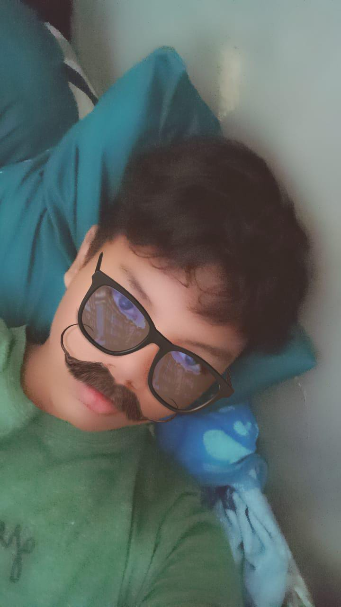

Pelajar • Web Developer Pemula • Coding Enthusiast
Nama aku Syafiq Arkana Adhiyatma. Aku lahir pada 3 Juni 2011 di Brebes, Jawa Tengah. Saat ini aku berstatus sebagai pelajar di SMP Negeri 1 Brebes dan duduk di kelas 9.
Di usia yang masih muda, aku ingin mengasah bakatku di bidang coding. Karena itu, hobiku adalah belajar coding dan mencoba membuat berbagai macam website.
Aku mampu memahami materi pemrograman dengan cukup kompleks, walaupun terkadang membutuhkan waktu untuk benar-benar memahaminya.